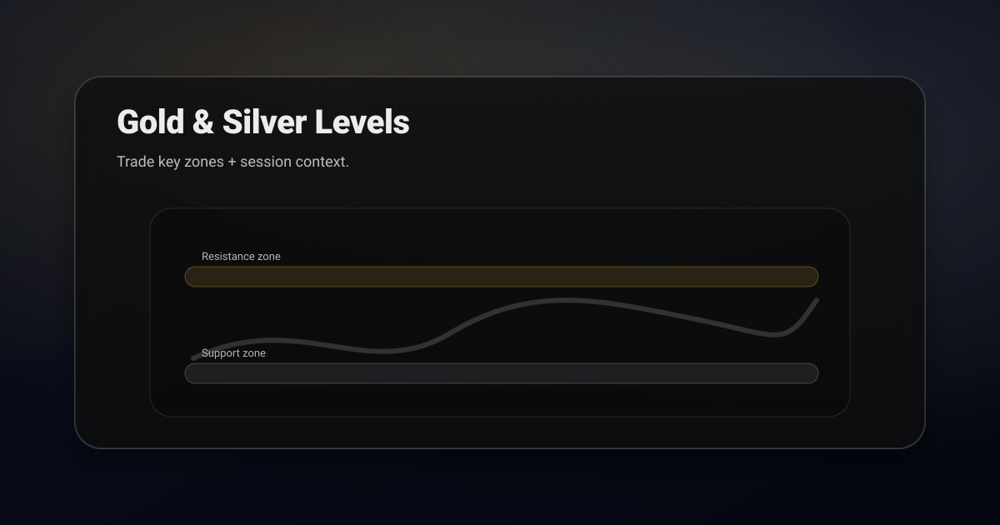

Reality check: no method guarantees profit. But avoiding sweeps + waiting for confirmation improves odds.
1) Mark the levels that actually matter
- prior day high/low
- weekly high/low
- range boundaries
- major swing highs/lows
2) Respect sessions (timing matters)
Metals often expand during London/NY overlap and around high-impact macro events. When volatility is high, trade zones, not single-pixel lines.
3) The most common trap: the sweep
Gold loves to wick through an obvious high/low and then reverse. This is why sweep + reclaim triggers are so useful.
- Trigger: wick through level, close back inside, then break rejection candle.
- Invalidation: acceptance beyond the swept level.
A prompt for AI metals analysis
Analyze this XAU/XAG chart screenshot.
1) Mark the 2 to 4 key levels (daily/weekly + structure)
2) Identify the most likely sweep risk near those levels
3) Give bull + bear scenarios with trigger + invalidation + target zones.What actually moves the metals
Gold and silver are not driven by the same things as equities, and trading them on chart structure alone means being surprised at predictable moments. Three inputs dominate, and all three are published on a schedule you can look up.
Real yields. This is the big one. Gold pays no income, so its main competitor is a government bond that does. When inflation-adjusted yields rise, holding gold costs more in forgone interest and gold tends to weaken. When real yields fall, that cost disappears. Most of gold's larger trends map onto this relationship more closely than onto anything visible on the chart.
The dollar. Gold is priced in dollars, so a stronger dollar mechanically makes it more expensive for everyone else. The inverse correlation is not perfect and it does break during genuine panics, when both rise together, but it holds often enough that checking the dollar before taking a gold trade is basic hygiene.
Central bank demand. A slower, structural bid that does not care about your timeframe. It rarely explains a Tuesday, but it is often why dips over months are shallower than the technicals suggested they should be.
Silver is not cheap gold
Traders move from gold to silver expecting the same chart with bigger numbers, and that is not what they get. Roughly half of silver demand is industrial, which ties it to manufacturing activity in a way gold is not. Silver therefore behaves as a hybrid, sometimes trading as a monetary metal and sometimes as an industrial commodity, and it can switch between those identities without warning.
It is also structurally more volatile, typically running two to three times gold's ATR as a percentage of price. That has a direct consequence for your sizing: the same setup on silver deserves roughly a third of the position you would take on gold, with a proportionally wider stop.
Watch the gold to silver ratio as context. When it is historically stretched, silver has tended to outperform in the subsequent recovery. It is a slow signal and useless for timing an entry, but it tells you which metal is likely to pay you more for the same correct call.
The calendar matters more than the pattern
Metals react sharply to scheduled macro releases, and a technically perfect setup entered ten minutes before one is not a trade, it is a coin flip with a spread cost. The releases that reliably move gold and silver are inflation prints, central bank rate decisions and the press conferences that follow, and employment data.
The press conference matters more than the decision itself surprisingly often, because the decision is usually priced and the guidance is not. Expect the initial move on the headline to reverse during the questions, which is why entering on the first spike is such a common way to lose money quickly.
Either be flat into the release, or be positioned well beforehand with a stop wide enough to survive the noise and size small enough that surviving it does not matter much. What does not work is entering into the event at normal size and hoping the level holds.
Spot, futures, and why your chart may differ
Gold trades as spot, as futures, and through ETFs, and these do not print identical charts. Futures carry a roll, so contracts expire and the continuous chart contains adjustments that never happened at a tradeable price. Levels drawn across a roll boundary can be levels nobody actually traded.
Spot runs nearly around the clock with a short daily break, while futures follow exchange hours. Your broker's feed may differ slightly from the reference price, which matters when you are placing a stop just beyond a level and a few tenths of a dollar decides whether you are filled.
Pick one instrument, draw your levels on that instrument's own chart, and stay there. Mixing a spot chart with a futures execution is a small inconsistency that produces exactly the kind of unexplained stop-out that makes traders distrust their own analysis.
Session behaviour in the metals
Gold trades nearly around the clock, but the character of the market changes completely depending on who is awake, and treating all hours as equivalent is how traders end up with levels that seem to work at random.
The Asian session is typically the quietest, with narrow ranges and levels that hold well simply because there is not enough force to break them. Ranges established here are frequently swept later, so a clean Asian range is more useful as a liquidity map than as a trade.
The London open brings the first real volume of the day and produces many of gold's cleanest directional moves. The overlap with New York is the most liquid window and where the largest moves concentrate, and it is also when scheduled data lands. Late New York thins out, and a breakout at that hour deserves more suspicion than the same breakout at midday.
A practical consequence: a level that held three times overnight has not really been tested. Wait for it to survive the London open before treating it as established.
The sweep is the default, not the exception
Metals run stops with unusual enthusiasm, and traders who come from equities consistently underestimate how routine this is. Price pushes just beyond an obvious high or low, triggers the orders resting there, and reverses hard once that liquidity is collected.
This is not manipulation in any conspiratorial sense, it is simply where the orders are. Large participants need volume to fill against, and the far side of an obvious level is where volume is guaranteed to exist. If you can see the level clearly, so can everyone else, and that visibility is exactly what makes it a target.
Trade the reclaim rather than the break. Let price take the level, wait for it to fail to hold beyond, and enter on the return with your stop past the sweep extreme. The setup gives you a tighter invalidation than the breakout ever offered, and it puts you on the same side as whoever just collected that liquidity.
Position sizing in the metals
Because gold and silver have very different volatility profiles, using the same position size on both is a quiet way to take on far more risk than intended. Size each from its own ATR rather than from a fixed lot or contract count you are used to.
A useful habit is to express your stop in ATR multiples and let the position size fall out of that. A trade with a stop at 1.5 times ATR risks the same amount of money on gold, on silver, and on anything else, which is the entire point. When you switch between the two metals, the number of ounces or contracts should change substantially, and if it does not, something is wrong.
Related posts
- Support & Resistance Trading
- How to Find Key Levels (Day Trading)
- Risk Management & Position Sizing
- Break and Retest Strategy
- Market Structure: BOS vs CHoCH
Sweeps around news are a level problem before they are a patience problem. The four step read is in how to read a trading chart.
Get ChartsGPT
Turn your screenshot into key levels, scenarios, trigger, and invalidation in seconds.


About ChartsGPT
ChartsGPT is an AI chart analysis app designed to turn screenshots into structured levels and scenarios. For support, contact anthonyvvza@gmail.com.